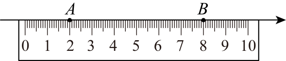

专题06 相反数、绝对值、倒数与整体求值（举一反三专项训练）
【北师大版2024】
考卷信息：
本套训练卷共40题. 题型针对性较高，覆盖面广，选题有深度，可加深学生对相反数、绝对值、倒数与整体求值的理解！
1．（23-24七年级上·湖南娄底·期中）若a、b互为相反数，c、d互为倒数，m的绝对值为2，则2m−cd+a+bm值为（ ）
A．−3 B．3 C．−5 D．3或−5
2．（24-25七年级上·云南昆明·阶段练习）若a，b互为相反数，c，d互为倒数，m到−2的距离是3，则5a−3cd+5b−−m的值为（）
A．−2 B．2 C．−2或2 D．−4或−8
3．若a，b互为相反数，且ab≠0，c、d互为倒数，m=2，则(a+b)2021+ba3−3cd+2m的值是（ ）
A．0 B．0或−8 C．−2或6 D．2或−6
4．（24-25七年级上·广东江门·阶段练习）若a，b互为相反数，c，d互为倒数，且b≠0，则(a+b)2025+(cd)2024−ab2025=（ ）
A．1 B．−1 C．−2 D．2
5．a是相反数等于本身的数，b是绝对值和倒数均等于本身的数，c是最大的负整数，则a−b−c= .
6．（23-24七年级上·广东惠州·期中）若a，b互为倒数，m，n互为相反数，x的绝对值为3，则ab+2023m+x2+ 2023n= ．
7．（23-24七年级上·河北石家庄·期中）已知有理数a，b，c，d，e，且a、b互为倒数，c、d互为相反数，e绝对值为5，则2ab+c+d5+5e的值为 ．
8．（22-23七年级上·山东日照·期末）如果a，b互为相反数，c，d互为倒数，正数m的绝对值是5，则2023a−(m−6cd)2+2023b+2023的值是 ．
9．（22-23七年级上·江苏常州·期中）数轴上有A、B两点，点A表示8的相反数，点B表示绝对值最小的数，一动点P从点B出发，在数轴以1单位长度/秒的速度运动，3秒后，点P到点A的距离为 单位长度．
10．（23-24七年级上·山西吕梁·期中）如图，在数轴上点A表示的数a是−23的相反数，点B表示的数b是最小的正整数，点C表示的数c是绝对值是3的负整数．若将数轴折叠，使得点A与点C重合，则与点B重合的点表示的数是 ．

11．（22-23六年级下·黑龙江哈尔滨·期中）已知：a与b互为倒数，c与d互为相反数，x的绝对值为5，求：x2+(ab+c+d)x+(−ab)2022+(−c−d)2023的值．
12．（23-24六年级下·黑龙江哈尔滨·阶段练习）已知a和b互为相反数且b≠0，c、d互为倒数，m的绝对值为1，求ab+a+b5+cd+3|m|的值．
13．（22-23七年级上·江苏无锡·期中）若a、b互为相反数，c、d互为倒数，m=2，求3m−−9+2021a+b2022−cd的值．
14．（23-24七年级上·宁夏吴忠·阶段练习）已知：a、b互为相反数、且都不为零，c，d互为倒数，且m=2．
(1)求m的值；
(2)求：m+a+b−cd的值．
15．（23-24七年级上·甘肃庆阳·期末）已知m=1，a和b互为倒数，c和d互为相反数，求(−ab)2024+50(c+d)−m的值．
16．（23-24七年级上·甘肃平凉·期中）x和y互为相反数，m与n互为倒数，a=1，求a2−(x+y+mn)a+(x+y)2012+(−mn)2013的值．
17．（23-24七年级上·河南洛阳·期中）已知：a、b互为相反数，m、n互为倒数，x到2的距离为3．求代数式(a+b−mn)x+(a+b)2022+(−mn)2033的值．
18．（23-24六年级下·黑龙江哈尔滨·阶段练习）已知a和b是非0的相反数，c和d互为倒数，|m|=2．求m3−ab2024+cd2−5m的值．
19．（23-24七年级上·青海西宁·期中）已知a，b互为倒数，c，d互为相反数，且m是最大的负整数，求：ab4−3m2+2024c+2024d的值
20．（23-24七年级上·云南文山·阶段练习）已知a、b 互为相反数，c、d 互为倒数，x=−5．试求下式的值：x−a+b+cd+a+b+−cd
21．（23-24六年级下·全国·假期作业）若a与b互为相反数，x与y互为倒数，m的绝对值和倒数均是它本身，n的相反数是它本身，求15a2019+b2019−91xy2019+(−m)2019−n2019的值．
22．（23-24七年级上·四川凉山·阶段练习）已知a，b互为相反数，c，d互为倒数，m的绝对值为3．
(1)求m−a−b+cd的值；
(2)求−cd2023+m2−3a+3b2024+m的值．
23．已知a、b互为相反数，c、d互为倒数，m的绝对值等于5，求−m2+(cd+a+b)2018×m+(−cd)3的值．
24．（23-24六年级下·黑龙江哈尔滨·阶段练习）若a、b互为相反数，c、d互为倒数，且2m+3=0，求a+b102m−3mcd2的值．
25．（23-24七年级上·河南商丘·期末）若a，b互为相反数，c，d互为倒数，m到原点的距离为2个单位长度，n既不是正数也不是负数，求a+bm2024+m2−(cd)2023+n(a+b+c+d)的值．
26．（23-24七年级上·湖南长沙·阶段练习）已知：a是最大的负整数，b是绝对值最小的数，c是倒数等于本身的正数，试回答问题：
(1)请直接写出a，b，c的值；
(2)若a，b，c所对应的点分别为A，B，C，点P为一动点，其对应的数为x，点P在A到C之间运动时，请化简式子：x+1−1−x+2x−3.
27．（23-24七年级上·甘肃陇南·期中）已知a，bb≠0互为相反数，c，d互为倒数，x的绝对值等于2，试求x2−a+b−cdx+ab2023的值．
28．已知x−3+y−22=0，b和d互为倒数，m和n的绝对值相等，且mn<0，p是最大的负整数．求p+y2+mx+bd+ny2的值．
29．（23-24七年级上·江苏无锡·阶段练习）已知a是最小的正整数，b是绝对值最小的有理数，c的倒数是−2,d的绝对值是5．求a⋅c−b−d的值．（说明a⋅c表示a与c的乘积）
30．（23-24七年级上·江苏无锡·阶段练习）已知有理数a、b互为相反数且b≠0，c、d互为倒数，m的绝对值是最小的正整数，求m2−ab+a+b2023−cd的值．
31．（23-24八年级上·广东中山·期中）已知a与b互为相反数，c，d互为倒数，且x+32+y−2=0，求2a+b−2cd4+x+y2023的值．
32．（23-24七年级上·广东深圳·期中）若a，b互为相反数，c，d互为倒数，m=4，则：
(1)a+b=______；cd=_______；m=______；
(2)求a+b3+m2−5cd的值．
33．（23-24七年级上·四川成都·期中）已知有理数a，b，c，d在数轴上的位置如图所示：

(1)化简：d−b+c+c−a；
(2)若a=b，且c，d互为倒数，数m在数轴上对应的点M到原点的距离等于1，求1+a+bm2−3cd+m2023的值．
34．（24-25七年级上·河南周口·阶段练习）已知a与2互为相反数，b与−13互为倒数．
(1)则a= ，b= ．
(2)已知m−a+b+n=0，求m+n的绝对值．
35．（24-25七年级上·湖北武汉·阶段练习）已知a，b互为相反数，c，d互为倒数，m是绝对值最小的数，且(x−1)2+y−2=0．求3(a+b)+6cd−5xy+m的值．
36．（23-24七年级上·湖南长沙·阶段练习）已知a与b互为相反数，c与d互为倒数，x与y满足x−2+y−1012=0，求a+b+cd+xy−1的值．
37．（24-25七年级上·广西南宁·阶段练习）根据下列条件求值：
(1)若a、b互为相反数，c、d互为倒数，m为6，求a+bm+cd−m的值．
(2)已知ab<0，|a|=3，b是最小的正整数，求a+b的值．
38．（23-24七年级上·湖南益阳·期中）七年级的小李同学在学习有理数时遇到了这样一个题，老师说这个考查同学们做题时是否分情况讨论“若a，b互为相反数，c，d互为倒数，m的绝对值为5”小李同学拿到了满分，期待你的解答．
(1)直接写出a+b，cd，m的值；
(2)求m2+cd+a+bm的值．
39．（24-25七年级上·江苏连云港·阶段练习）以1厘米为1个单位长度用直尺画数轴时，数轴上点A和点B表示的数互为相反数，点A和点B刚好对着直尺上的刻度2和刻度8．

(1)写出点A和点B表示的数；
(2)写出与点B距离为8.5厘米的直尺左端点C表示的数；
(3)在数轴上有一点D，其到A的距离为1，到B的距离为5，求点D所表示的数的倒数．
40．（24-25七年级上·吉林长春·阶段练习）如图，点O是数轴的原点，数轴上点A、B表示的数分别是4、−8．这个数轴上的动点P以每秒2个单位长度的速度从点O出发沿O→A→B方向运动到点B停止．设点P的运动时间为t(s)(t>0)．
(1)当点P与点A重合时，求t的值；
(2)当点P表示的是绝对值最小的数时，求t的值；
(3)当点P表示的数是倒数等于它本身的数时，求t的值；
(4)在点A、B之间，当点P表示的整数的点找不到与它到原点的距离相等的点时，直接写出t的值（写出两个即可）．